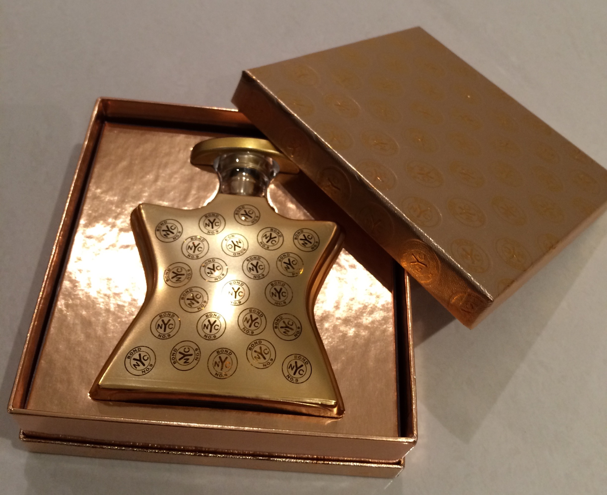

Celebrating Another Trip Around the Sun: The Joy of Receiving Birthday
Gifts
March 19, 2018
Birthdays are a special time of the year when we get to celebrate
ourselves and the journey we've taken around the sun. One of the most
exciting aspects of birthdays is the joy of receiving gifts from loved
ones. In this blog, we'll explore the anticipation, the heartfelt
gestures, and the happiness that comes with receiving gifts on your
special day.

The Anticipation
As your birthday approaches, there's a sense of anticipation in the air.
Thoughts of what surprises might be waiting for you on the big day fill
your mind. The excitement builds as friends and family drop hints or
keep their plans under wraps, making you eagerly anticipate the moment
when you'll unwrap your presents and discover the thought and love that
went into choosing them.
Heartfelt Gestures
Birthday gifts are more than just material possessions. They are
expressions of love, care, and thoughtfulness from the people who
cherish you. Whether it's a handmade card, a personalized item, or a
carefully selected item that reflects your interests, each gift carries
a message of affection and appreciation. These gestures remind you of
the deep connections you have with your loved ones and the value they
place on your happiness.
Unwrapping Surprises
On your birthday, as you unwrap each gift, there's a sense of wonder and
excitement that fills the room. The element of surprise adds to the joy
of the moment. As you tear away the wrapping paper, you're met with the
anticipation of discovering what lies beneath. It's a moment of pure
delight, where you're enveloped in the love and thoughtfulness of the
people who have chosen these gifts for you.
A Reflection of Personal Interests
One of the beautiful things about receiving birthday gifts is that they
often reflect your personal interests and passions. Whether it's a book
by your favorite author, a piece of jewelry that complements your style,
or art supplies to fuel your creative endeavors, these gifts show that
your loved ones truly know you and value what makes you unique. It's a
reminder that they see and appreciate the essence of who you are.
Gratitude and Connection
The Foshay Tower Observation Deck not only provides stunning views but
also offers a glimpse into the tower's captivating history. Explore the
exhibits that showcase the tower's construction, its original purpose as
a headquarters for the Foshay Company, and the subsequent transformation
into a hotel and observation deck. Delve into the stories that have
shaped this architectural gem and gain a deeper appreciation for its
significance to the city.
Receiving birthday gifts is not just about the presents themselves; it's
about the connection and gratitude that flows between you and your loved
ones. Expressing heartfelt appreciation for the gifts you receive
strengthens your bond with them. It's an opportunity to pause and
reflect on the meaningful relationships in your life and to reciprocate
the love and thoughtfulness that has been extended to you.